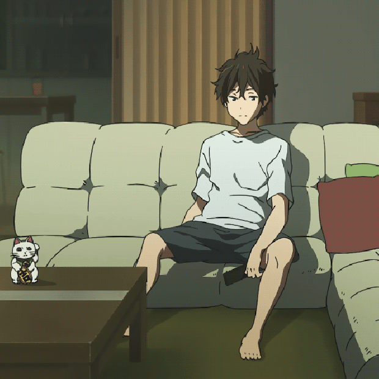
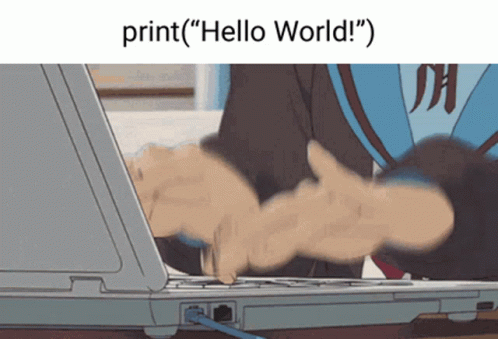

Hobbies & Interests
A little peek into who I am outside of work!
Gaming
I enjoy spending my time gaming, such as playing Dota 2 and play-to-earn games. It keeps me entertained while also helping me develop teamwork, patience, and strategic thinking.

Anime & Manga
I enjoy spending my time watching anime and reading manga. It inspires my creativity and attention to detail, especially in my projects.

Coding & Building
Building and coding personal projects beyond school tasks, experimenting with ideas and improving my understanding of how systems work.

Digital Design
Enjoy creating clean and simple layouts using Canva, combining creativity with organization to produce visually appealing designs.

Active LifeStyle
I am a sporty person who enjoys running, hiking, and exploring different outdoor places. I like activities that challenge me physically and help me stay healthy, and I enjoy making the most of my time outside.